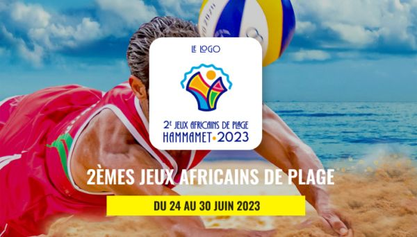
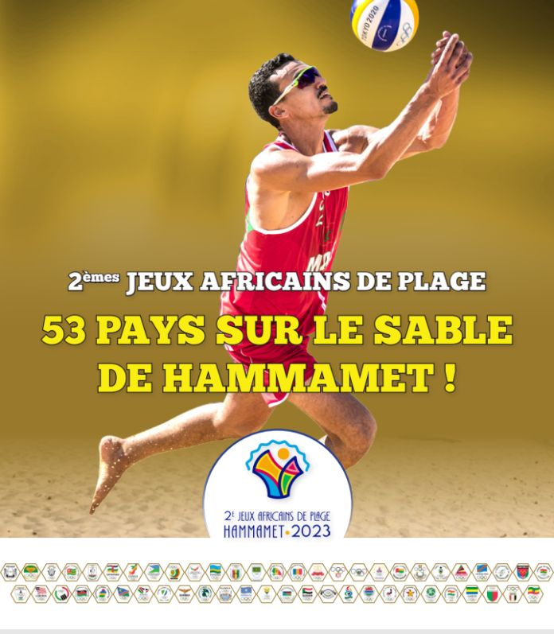

Retour en force : La Tunisie organise les Jeux de Plage Africains après l'édition de 2001
Après une longue attente depuis l'édition de 2001, la Tunisie est fière d'accueillir à nouveau les Jeux de Plage Africains. Cet événement marque un tournant majeur pour le pays, qui aspire à être un acteur clé dans l'organisation de compétitions continentales. Nous avons eu l'opportunité d'interviewer Monsieur Maher Mrayeh, Directeur Général du Sport, pour en savoir plus sur l'importance de cet événement.
La diplomatie sportive au service de l'organisation des jeux de plages
Selon Monsieur Maher Mrayeh, la diplomatie sportive a joué un rôle essentiel dans l'obtention de l'organisation des Jeux de Plage Africains en Tunisie. Grâce à des relations de fraternité avec plusieurs pays africains, en particulier l'Algérie, la Tunisie a pu bénéficier du soutien de l'Association des Comités Nationaux Olympiques d'Afrique (ACNOA), présidée par un Algérien. De plus, la représentativité de la Tunisie au sein des différentes structures sportives africaines et internationales a renforcé sa candidature.
Promotion du sport et de l'économie: L'impact des jeux de plages Africains en Tunisie
L'organisation des Jeux de Plage Africains en Tunisie contribuera grandement à la promotion du sport dans la région et sur le continent. Cet événement réunira 54 pays africains et plus de 1000 athlètes, offrant ainsi une plateforme exceptionnelle pour favoriser la communication et la solidarité entre les peuples africains. De plus, il permettra de mettre en valeur le potentiel touristique du pays en tant que destination sportive.
Sur le plan économique, l'événement offre de nombreuses Opportunités de partenariats sportifs et économiques
Les Jeux de Plage Africains en Tunisie créent également des opportunités de partenariats sportifs et économiques. L'exemple de partenariat avec l'opérateur téléphonique Ooredoo témoigne de la volonté de soutenir le sport tunisien et de promouvoir l'économie locale. En renouvelant son accord de partenariat avec le Comité National Olympique Tunisien, Ooredoo démontre son engagement en faveur de l'excellence sportive et de la promotion des valeurs olympiques. D'autres opérateurs téléphoniques, tels que Telecom et Orange, pourraient également saisir cette opportunité pour soutenir le sport en Tunisie.
Le sport comme moteur de relance économique dans un contexte fragile
Dans un contexte économique fragile, le sport peut jouer un rôle essentiel dans la relance économique. Monsieur Maher Mrayeh souligne que le sport contribue au développement et à la paix en favorisant la tolérance,l'autonomisation des individus et des communautés, ainsi que la réalisation des objectifs de santé, d'éducation et d'inclusion sociale. Grâce à sa portée mondiale, le sport peut relier les réseaux influents des partenaires et des parties prenantes pour soutenir le développement économique durable.
Objectifs à long terme : La promotion des sports de plage en Tunisie après les jeux Africains
Au-delà de l'événement lui-même, la Tunisie a des objectifs à long terme en termes de promotion des sports de plage. Elle vise à diversifier les activités sportives, à multiplier le nombre de pays participants aux jeux de plage et à créer des sites spécifiques pour accueillir ces événements. De plus, la Tunisie envisage d'organiser des jeux nationaux de plage chaque été, en adoptant le principe de la décentralisation. Cela permettrait de mettre en valeur le patrimoine des jeux traditionnels et de favoriser la participation active de la population locale.
En conclusion, les Jeux de Plage Africains en Tunisie marquent un tournant majeur pour le pays. En retrouvant son rôle de carrefour du sport international, la Tunisie valorise l'importance des compétitions multidisciplinaires en tant que moteur de développement, de stabilité et de paix. L'organisation de cet événement contribue à la promotion du sport dans la région et sur le continent, tout en offrant des opportunités de partenariats sportifs et économiques. De plus, dans un contexte économique fragile, le sport peut jouer un rôle clé dans la relance économique en favorisant le développement durable. Les objectifs à long terme de la Tunisie visent à promouvoir les sports de plage et à en faire un pilier de son paysage sportif. Les Jeux de Plage Africains sont une étape essentielle dans cette démarche, et la Tunisie est prête à accueillir le continent africain pour une semaine de compétition, d'amitié et de célébration sportive.